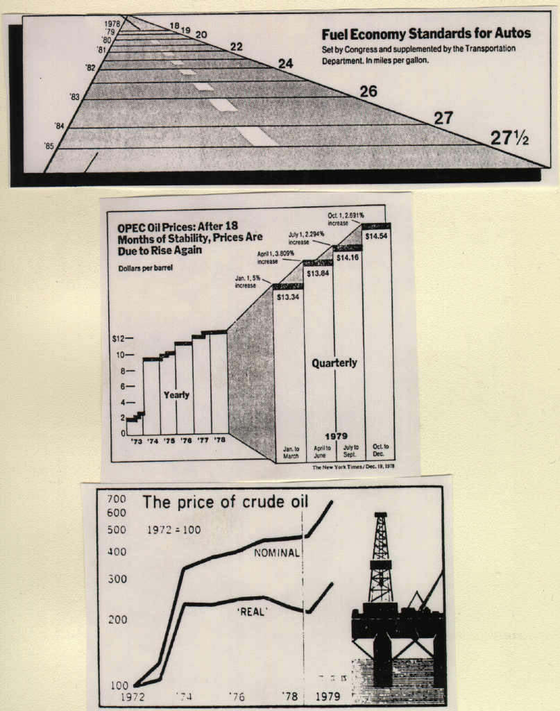

- Exercise 1.11, 1.12, 1.14
- Exercise 2.2, 2.15, 2.17
- Exercise 2.28, 2.35, 2.37
- Exercise 2.44
- Exercise 2.66, 2.67, 2.68
- Exercise 2.86, 2.92

- a) Mark the following regions, using the letters "A", "B", "C":
"A": Second Class, Child, Female, Survived
"B": Third Class, Adult, Male, Not Survived
"C": Crew, Adult, Female, Survived - b) Indicate which of these statements is correct and which is
incorrect:
i) A very large percentage of First Class, Adult, Female survived.
ii) A very large percentage of Second Class, Adult, Male survived.
iii) There were more First Class than Third Class passengers.
iv) There were more Crew members than First Class and Second Class passengers together.
